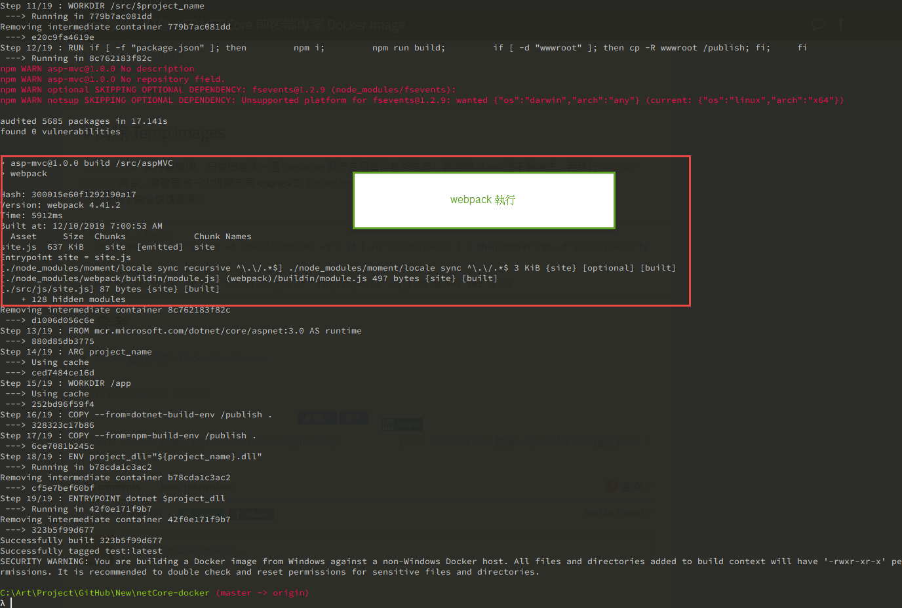

第一個練習
建立範本網站
利用 dotnet new web 指令快速建立一個.net core 網站範本
1
2
| # 建立一個.net core 網站範本，專案目錄為aspMVC
dotnet new web -o aspMVC
|
透過上述指令會建立一個可以執行的.net core 網站範本，在本次練習中就充當我們自己所開發的網頁
建立 dockerfile
大致上就是先透過一個包含有 sdk 可以建置的容器去 build 專案，再將這個建置完的檔案拿去另一個 runtime 的容器佈署
容器的版本要能夠支援你的應用程式，在這邊我的測試網站是透過.net core 3.0 建立，所以選擇的 image 也是 3.0 版本
1
2
3
4
5
6
7
8
9
10
11
12
13
|
FROM mcr.microsoft.com/dotnet/core/sdk:3.0 AS build
COPY . ./app/
WORKDIR /app
RUN dotnet publish -c Release -o out
FROM mcr.microsoft.com/dotnet/core/aspnet:3.0 AS runtime
COPY --from=build /app/out ./
ENTRYPOINT ["dotnet", "aspMVC.dll"]
|
建立 image
建立好 dockerfile 之後，就是透過 docker build 指令讓 docker 依照我們設定好的指令建立 image
1
| docker build -t myimage .
|
上述指令會執行當前目錄的 dockerfile 建立 image，並標記名稱為 myimage
建立 container
- 使用 myimage 映像檔建立一個新的容器
- 容器名稱為 mycontainer
- 將容器的 80 port 對應至 本機的 8000 port
1
| docker run -d --name=mycontainer -p 8000:80 myimage
|
如此一來，就可以開啟http://localhost:8000瀏覽網站
小技巧
這邊都是從Docker 教學 - 打包 ASP.NET Core 前後端專案 Docker Image看來的，文章含金量高，建議前往閱讀
外部傳入參數
透過外部傳入參數，這樣相同的專案大概都適用
1
2
3
4
5
6
7
8
9
10
11
12
13
14
15
16
17
|
FROM mcr.microsoft.com/dotnet/core/sdk:3.0 AS build
ARG project_name
COPY ./src ./src
WORKDIR /src
RUN dotnet publish $project_name -o /publish --configuration Release
FROM mcr.microsoft.com/dotnet/core/aspnet:3.0 AS runtime
ARG project_name
COPY --from=build /publish ./
ENV project_dll="${project_name}.dll"
ENTRYPOINT dotnet $project_dll
|
上面的指令最坑的應該就是ENV那一行了，等於後面不要加上空格
編譯前端專案
1
2
3
4
5
6
7
8
9
10
11
12
13
14
15
16
17
18
19
20
21
22
23
24
25
26
27
28
29
30
31
32
33
34
35
|
FROM mcr.microsoft.com/dotnet/core/sdk:3.0 AS dotnet-build-env
ARG project_name
COPY ./src ./src
WORKDIR /src
RUN dotnet publish $project_name -o /publish --configuration Release
FROM node:11 AS npm-build-env
ARG project_name
RUN mkdir -p /publish
RUN npm set progress=false;
COPY ./src /src
WORKDIR /src/$project_name
RUN if [ -f "package.json" ]; then \
npm i; \
npm run build; \
if [ -d "wwwroot" ]; then cp -R wwwroot /publish; fi; \
fi
FROM mcr.microsoft.com/dotnet/core/aspnet:3.0 AS runtime
ARG project_name
WORKDIR /app
COPY --from=dotnet-build-env /publish .
COPY --from=npm-build-env /publish .
ENV project_dll="${project_name}.dll"
ENTRYPOINT dotnet $project_dll
|

上圖就是在 node-build-env 中透過 webpack 處理前端程式的部分，相關依賴套件要先 npm install –save-dev，避免在 docker build 的時候出錯
快速清掉 build 時暫存的 stage image
1
| FOR /f "tokens=*" %i IN ('docker images -f "dangling=true" -q') DO docker rmi -f %i
|
Sample Code
GitHub：netcore-docker